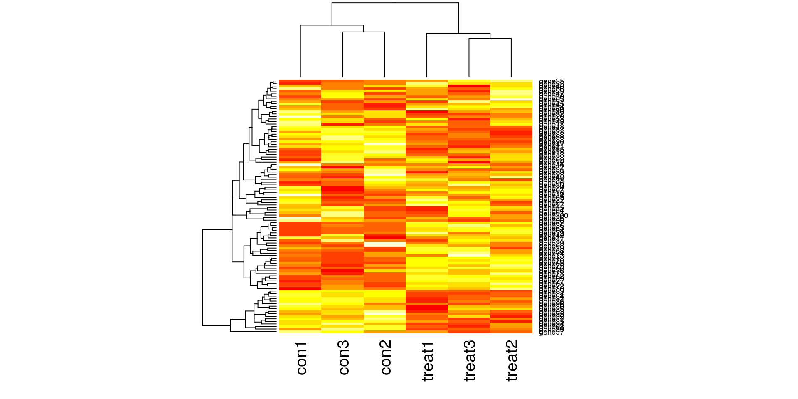
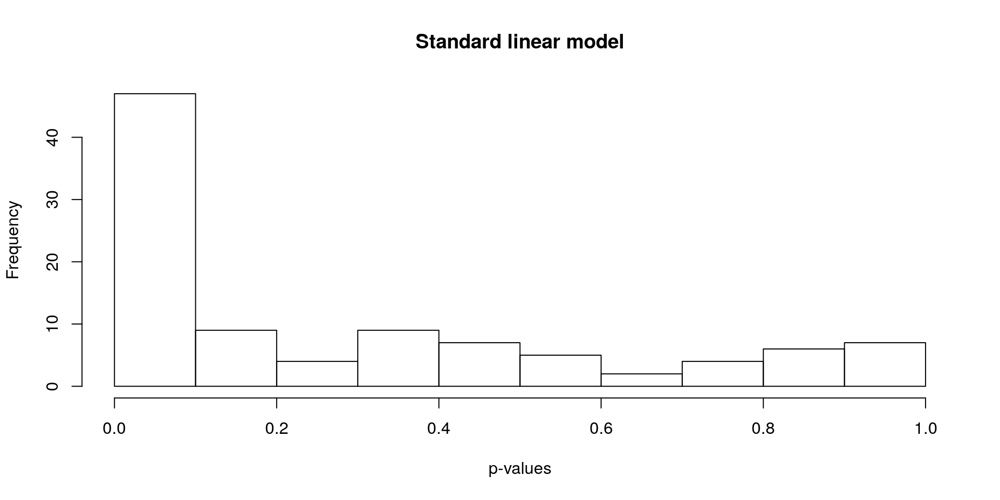
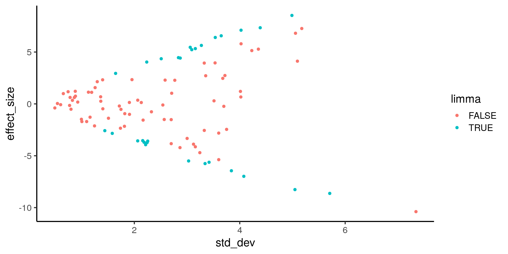
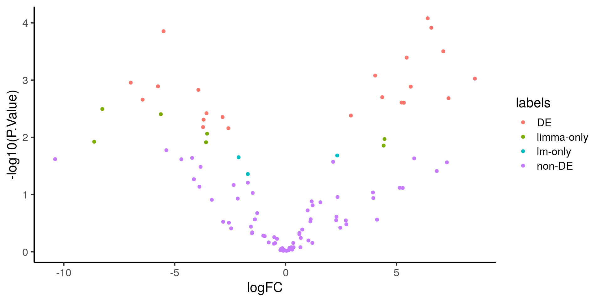
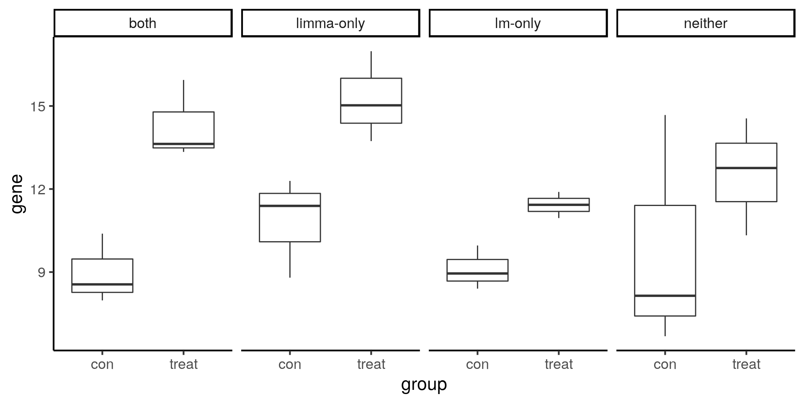

The benefit of sharing information across genes
John Blischak
2018-08-20
Last updated: 2018-08-20
workflowr checks: (Click a bullet for more information)-
✔ R Markdown file: up-to-date
Great! Since the R Markdown file has been committed to the Git repository, you know the exact version of the code that produced these results.
-
✔ Environment: empty
Great job! The global environment was empty. Objects defined in the global environment can affect the analysis in your R Markdown file in unknown ways. For reproduciblity it’s best to always run the code in an empty environment.
-
✔ Seed:
set.seed(12345)The command
set.seed(12345)was run prior to running the code in the R Markdown file. Setting a seed ensures that any results that rely on randomness, e.g. subsampling or permutations, are reproducible. -
✔ Session information: recorded
Great job! Recording the operating system, R version, and package versions is critical for reproducibility.
-
Great! You are using Git for version control. Tracking code development and connecting the code version to the results is critical for reproducibility. The version displayed above was the version of the Git repository at the time these results were generated.✔ Repository version: 1526cb1
Note that you need to be careful to ensure that all relevant files for the analysis have been committed to Git prior to generating the results (you can usewflow_publishorwflow_git_commit). workflowr only checks the R Markdown file, but you know if there are other scripts or data files that it depends on. Below is the status of the Git repository when the results were generated:
Note that any generated files, e.g. HTML, png, CSS, etc., are not included in this status report because it is ok for generated content to have uncommitted changes.Ignored files: Ignored: .Rhistory Ignored: .Rproj.user/ Untracked files: Untracked: code/counts_per_sample.txt Untracked: code/table-s1.txt Untracked: docs/figure/linear-models.Rmd/
Expand here to see past versions:
| File | Version | Author | Date | Message |
|---|---|---|---|---|
| Rmd | 1920833 | John Blischak | 2018-08-20 | Refactor first edition of chapter 1 into distinct lessons. |
Introduction
The simulation and visualizations below demonsrate the differences in the results due to limma sharing information across genes to shrink the estimates of the variance.
Setup
library("cowplot")
library("dplyr")
library("ggplot2")
theme_set(theme_classic(base_size = 16))
library("knitr")
opts_chunk$set(fig.width = 10, fig.height = 5, message = FALSE)
library("stringr")
library("tidyr")Simulation
Create some synthetic data for illustrating concepts. The simulated gene expression matrix has 100 genes and 6 samples (3 treatment and 3 control).
set.seed(12345)
create_exp_mat <- function(n1, n2, ng,
alpha_mean, beta_mean, epsilon_sd) {
status <- c(rep(0, n1), rep(1, n2))
ns <- length(status)
status <- matrix(status, nrow = 1)
alpha <- rnorm(ng, mean = alpha_mean, sd = 1)
beta <- matrix(rnorm(ng, mean = beta_mean, sd = 1), ncol = 1)
epsilon <- matrix(rnorm(ng * ns, mean = 0, sd = epsilon_sd),
nrow = ng, ncol = ns)
Yg <- alpha + beta %*% status + epsilon
return(Yg)
}
gexp <- rbind(
# 30 non-DE genes with high variance
create_exp_mat(n1 = 3, n2 = 3, ng = 30, alpha_mean = 10, beta_mean = -1:1, epsilon_sd = 3),
# 30 non-DE genes with low variance
create_exp_mat(n1 = 3, n2 = 3, ng = 30, alpha_mean = 10, beta_mean = -1:1, epsilon_sd = 1),
# 10 upregulated DE genes with low variance
create_exp_mat(n1 = 3, n2 = 3, ng = 10, alpha_mean = 10, beta_mean = 5, epsilon_sd = 1),
# 10 upregulated DE genes with high variance
create_exp_mat(n1 = 3, n2 = 3, ng = 10, alpha_mean = 10, beta_mean = 5, epsilon_sd = 3),
# 10 downregulated DE genes with low variance
create_exp_mat(n1 = 3, n2 = 3, ng = 10, alpha_mean = 10, beta_mean = -5, epsilon_sd = 1),
# 10 downregulated DE genes with high variance
create_exp_mat(n1 = 3, n2 = 3, ng = 10, alpha_mean = 10, beta_mean = -5, epsilon_sd = 3)
)
# Add names for samples
group <- rep(c("con", "treat"), each = ncol(gexp) / 2)
samples <- paste0(group, 1:3)
colnames(gexp) <- samples
# Add names for genes
genes <- sprintf("gene%02d", 1:nrow(gexp))
rownames(gexp) <- genes
heatmap(gexp)
Standard linear model
Find differentially expressed genes using a standard linear model.
lm_beta <- numeric(length = nrow(gexp))
lm_se <- numeric(length = nrow(gexp))
lm_p <- numeric(length = nrow(gexp))
for (i in 1:length(lm_p)) {
mod <- lm(gexp[i, ] ~ group)
result <- summary(mod)
lm_beta[i] <- result$coefficients[2, 1]
lm_se[i] <- result$coefficients[2, 2]
lm_p[i] <- result$coefficients[2, 4]
}
hist(lm_p, xlab = "p-values", main = "Standard linear model")
limma linear model
Find differentially expressed genes using limma.
library("limma")
design <- model.matrix(~group)
colnames(design) <- c("Intercept", "treat")
fit <- lmFit(gexp, design)
head(fit$coefficients) Intercept treat
gene01 11.316083 -2.4577980
gene02 9.833304 2.7130980
gene03 12.653098 -0.2048963
gene04 12.275601 0.2934781
gene05 8.617135 2.3383110
gene06 5.878178 3.9361382fit <- eBayes(fit)
results <- decideTests(fit[, 2])
summary(results) treat
Down 15
NotSig 71
Up 14stats <- topTable(fit, coef = "treat", number = nrow(fit), sort.by = "none")
hist(stats[, "P.Value"], xlab = "p-values", main = "limma linear model")Comparison
Compare the p-values from lm and limma (both adjusted for multiple testing with the BH FDR).
stats <- cbind(stats,
sd = apply(gexp, 1, sd),
var = apply(gexp, 1, var),
lm_beta, lm_se,
lm_p = p.adjust(lm_p, method = "BH"))
stats$labels_pre <- c(rep("non-DE; high-var", 30),
rep("non-DE; low-var", 30),
rep("DE-up; low-var", 10),
rep("DE-up; high-var", 10),
rep("DE-down; low-var", 10),
rep("DE-down; high-var", 10))
stats$labels <- rep("non-DE", nrow(stats))
stats$labels[stats$adj.P.Val < 0.05 & stats$lm_p < 0.05] <- "DE"
stats$labels[stats$adj.P.Val < 0.05 & stats$lm_p >= 0.05] <- "limma-only"
stats$labels[stats$adj.P.Val >= 0.05 & stats$lm_p < 0.05] <- "lm-only"
table(stats$labels)
DE limma-only lm-only non-DE
22 7 3 68 table(stats$labels, stats$labels_pre)
DE-down; high-var DE-down; low-var DE-up; high-var
DE 0 7 3
limma-only 1 3 1
lm-only 0 0 0
non-DE 9 0 6
DE-up; low-var non-DE; high-var non-DE; low-var
DE 9 0 3
limma-only 1 1 0
lm-only 0 0 3
non-DE 0 29 24stopifnot(stats$logFC == stats$lm_beta)
de <- data.frame(effect_size = stats$lm_beta,
std_dev = stats$sd,
lm = stats$lm_p < 0.05,
limma = stats$adj.P.Val < 0.05)
head(de) effect_size std_dev lm limma
1 -2.4577980 3.750555 FALSE FALSE
2 2.7130980 3.353835 FALSE FALSE
3 -0.2048963 1.715542 FALSE FALSE
4 0.2934781 3.511502 FALSE FALSE
5 2.3383110 1.955378 FALSE FALSE
6 3.9361382 3.326517 FALSE FALSE# View the number of discrepancies
table(de$lm, de$limma)
FALSE TRUE
FALSE 68 7
TRUE 3 22# Plot effect size (y-axis) vs. standard deviation (x-axis)
ggplot(de, aes(x = std_dev, y = effect_size, color = limma)) +
geom_point()
ggplot(stats, aes(x = sd, y = logFC, color = labels)) +
geom_point()
ggplot(stats, aes(x = logFC, y = -log10(P.Value), color = labels)) +
geom_point()
Example genes
Visualize example genes with boxplots. Note that the limma-only gene has higher variance compared to the lm-only gene.
# Find a good example of a DE gene
index <- which(stats$labels_pre == "DE-up; low-var" & stats$labels == "DE")[1]
single_gene <- gexp %>% as.data.frame %>%
slice(index) %>%
gather(key = "group", value = "gene") %>%
mutate(group = str_extract(group, "[a-z]*")) %>%
as.data.frame()
# Find a gene that is DE for both, DE for lm-only, and DE for limma-only
de_not <- de_lm <- which(stats$labels == "non-DE" &
stats$labels_pre == "non-DE; high-var" &
stats$logFC > 0)[1]
de_both <- which(stats$labels == "DE" &
stats$labels_pre == "DE-up; low-var")[1]
de_lm <- which(stats$labels == "lm-only" &
stats$labels_pre == "non-DE; low-var" &
stats$logFC > 0)[1]
de_limma <- which(stats$labels == "limma-only" &
stats$labels_pre == "DE-up; high-var")[1]
compare <- gexp %>%
as.data.frame() %>%
slice(c(de_not, de_both, de_lm, de_limma)) %>%
mutate(type = c("neither", "both", "lm-only", "limma-only")) %>%
gather(key = "group", value = "gene", con1:treat3) %>%
mutate(group = str_extract(group, "[a-z]*")) %>%
as.data.frame()
head(compare) type group gene
1 neither con 6.681872
2 both con 8.555641
3 lm-only con 9.959914
4 limma-only con 11.391149
5 neither con 8.144218
6 both con 7.977472# Plot gene expression (gene; y-axis) vs. group (x-axis)
ggplot(compare, aes(x = group, y = gene)) +
geom_boxplot() +
facet_wrap(~type, nrow = 1)
Session information
sessionInfo()R version 3.5.0 (2018-04-23)
Platform: x86_64-w64-mingw32/x64 (64-bit)
Running under: Windows 10 x64 (build 17134)
Matrix products: default
locale:
[1] LC_COLLATE=English_United States.1252
[2] LC_CTYPE=English_United States.1252
[3] LC_MONETARY=English_United States.1252
[4] LC_NUMERIC=C
[5] LC_TIME=English_United States.1252
attached base packages:
[1] stats graphics grDevices utils datasets methods base
other attached packages:
[1] bindrcpp_0.2.2 limma_3.36.1 tidyr_0.8.1 stringr_1.3.1
[5] knitr_1.20 dplyr_0.7.5 cowplot_0.9.2 ggplot2_2.2.1
loaded via a namespace (and not attached):
[1] Rcpp_0.12.17 compiler_3.5.0 pillar_1.2.3
[4] git2r_0.21.0 plyr_1.8.4 workflowr_1.1.1
[7] bindr_0.1.1 R.methodsS3_1.7.1 R.utils_2.6.0
[10] tools_3.5.0 digest_0.6.15 evaluate_0.10.1
[13] tibble_1.4.2 gtable_0.2.0 pkgconfig_2.0.1
[16] rlang_0.2.1 yaml_2.1.19 rprojroot_1.3-2
[19] grid_3.5.0 tidyselect_0.2.4 glue_1.2.0
[22] R6_2.2.2 rmarkdown_1.10 purrr_0.2.5
[25] magrittr_1.5 whisker_0.3-2 backports_1.1.2
[28] scales_0.5.0 htmltools_0.3.6 assertthat_0.2.0
[31] colorspace_1.3-2 labeling_0.3 stringi_1.2.3
[34] lazyeval_0.2.1 munsell_0.5.0 R.oo_1.22.0 This reproducible R Markdown analysis was created with workflowr 1.1.1